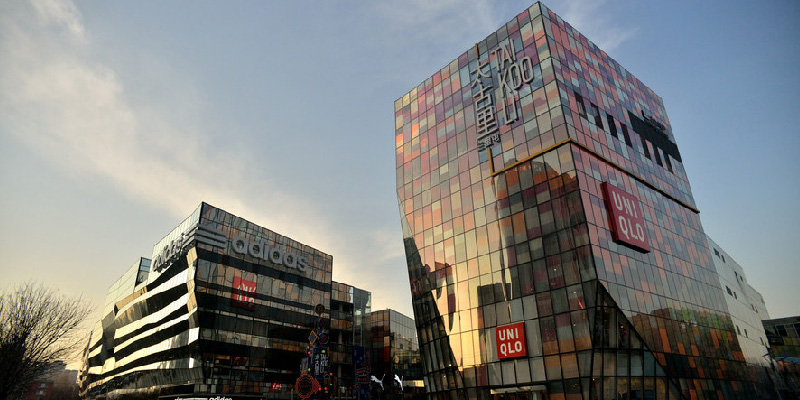

- 官方信息
官網
yijiangji.com官方郵箱
vip@yijiangji.com官方微信
官方指定信息渠道
@FOD工具控官方微博
@意匠集
- 地址信息
- 組委會地址
- 北京朝阳区酒仙桥
- 路甲12号电子城大厦2层
- 聯繫人信息
- 策劃聯繫人
- 張子建 微信 zijnss
- 商務合作聯繫人
- 王 璇 微信 ondesign

新浪微博

微信
意匠行業，承襲了古代設計的精髓，在當下更多了一層“走心”的內涵。
“意”，在走心，在體驗時代，人們對產品不再只是單純的需求，只有賦予 產品IP、輸入更多的內涵，產品才能成功地存活下來；“匠”，在精神， 越是在這個人人都可以創新的時代，匠人精神就越發地彌足珍貴。 “意匠”，“意”與“匠”的結合，“設計”完美融入文創產品的匠人精神， 這對於手作藝人、設計師，甚至每一個想去創造的普羅大眾，才是真正的創作精髓所在。

設下計謀。 魯迅
三國誌·魏誌·高貴鄉公髦傳》：“賂遺吾左右人，令因吾服藥，密因酖毒，重相設計。”元 尚仲賢《氣英布》第壹折：“運籌設計，讓之張良；點將出師，屬之韓信。” 明 馮夢龍 《喻世明言》第壹卷：“假如墻花路柳，偶然適興，無損於事；若是生心設計，敗俗傷風， 只圖自己壹時歡樂，卻不顧他人的百年恩義。”《東周列國誌》第七回：“原來鄭莊公設計， 假稱公子呂領兵救戴，其實莊公親在戎車之中。”
室內設計魯迅《書信集·致李小峰》：“書面我想也不必特別設計，只要仍用所刻的三個字， 照下列的樣子壹排。”魏巍《做新型的知識分子》四：“沒有設計就不能施工；沒有正確的 勘測，就不能有正確的設計。”
指搞設計工作的人。
艾青《早晨三點鐘》詩：“她的丈夫是設計也是監工，此刻她的心啊是多麽高興！”
設計某人,內涵陷害的意思。
這是另外壹種理解 意指設計家有目標有計劃的進行技術性的創作活動。設計的任務不要 是為生活和商業性服務，同時也伴有藝術性的創作。
根據工業設計師Victor Papanek 的定義，設計（Design）是為構建有意義的秩序而付 出的有 工業設計意識的直覺上的努力。更詳細的定義如下：
第壹步：理解用戶的期望、需要、動機，並理解業務、技術和行業上的需求和限制。
第二步：將這些所知道的東西轉化為對產品的規劃（或者產品本身），使得產品的形式、 內容和行為變得有用、能用，令人向往，並且在經濟和技術上可行。（這是設計的意義和基本要求所在）
這個定義可以適用於設計的所有領域，盡管不同領域的關註點從形式、內容到行為上均有所不同。
隨著現代科技的發展、知識社會的到來、創新形態的嬗變，設計也正由專業設計師的工作向更廣泛 的用戶參與演變，以用戶為中心的、用戶參與的創新設計日益受到關註，用戶參與的創新2.0 模式正在逐步顯現。用戶需求、用戶參與、以用戶為中心被認為是新條件下設計創新的重要特 征，用戶成為創新2.0的關鍵詞，用戶體驗也被認為是知識社會環境下創新2.0模式的核心。 設計不再是專業設計師的專利，以用戶參與、以用戶為中心也成為了設計的關鍵詞，Fab Lab、 Living Lab等的創新設計模式的探索正在成為設計的創新2.0模式。 包裝設計最簡單的關於 設計的定義、就是壹種“有目的的創作行為”。
然而設計也是壹種職業。例如在電影業中有場景設計壹職，在印刷業中，有包裝設計壹職。與英文 使用不同的是、英文的Designer壹詞、在中文使用時、設計與設計師兩個詞都能共同稱呼。而由 設計這個字沿伸出來有相當多的理論和議題，以設計為職業的社會環境通常就叫做設計界。
設計界因歐美國家發展理論歷史悠久，故設計史和相關理論，常以歐美的工業設計，建築設計為兩大主流。
由於設計行為壹般都解釋為有明確目標的，因此在近代將與設計意涵相反的創作，稱為亂數、隨機等等。
在西方，大型的設計系統，往往以Architecture建築來稱呼。這邊指的建築並非具體的建築學、而是壹種抽象的形容。
《三國誌·魏誌·高貴鄉公髦傳》：“賂遺吾左右人，令因吾服藥，密因酖毒，重相設計。”元 尚仲賢 《氣英布》第壹折：“運籌設計，讓之張良；點將出師，屬之韓信。” 明 馮夢龍《喻世明言》第壹 卷：“假如墻花路柳，偶然適興，無損於事；若是生心設計，敗俗傷風，只圖自己壹時歡樂，卻不顧 他人的百年恩義。”《東周列國誌》第七回：“原來鄭莊公設計，假稱公子呂領兵救戴，其實莊公親在戎車之中。”
室內設計魯迅《書信集·致李小峰》：“書面我想也不必特別設計，只要仍用所刻的三個字，照下列的樣子壹排。 ”魏巍《做新型的知識分子》四：“沒有設計就不能施工；沒有正確的勘測，就不能有正確的設計。”
官網
yijiangji.com官方郵箱
vip@yijiangji.com官方微信
官方指定信息渠道@FOD工具控
官方微博
@意匠集
新浪微博
微信